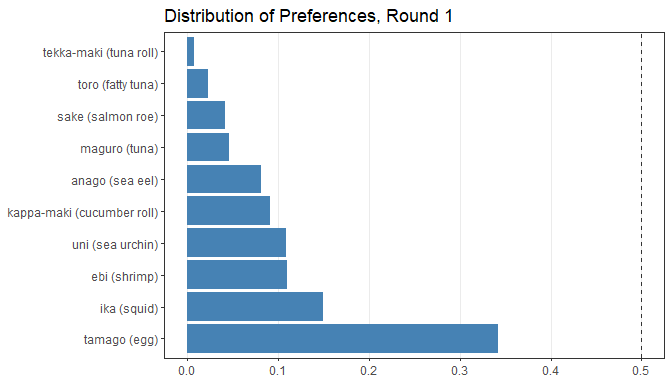
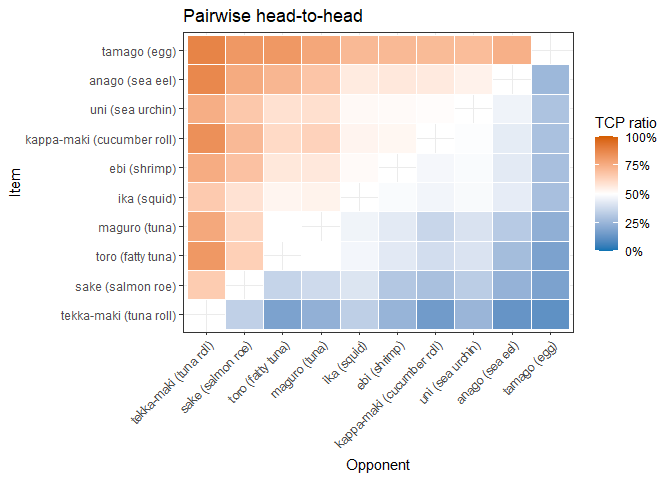
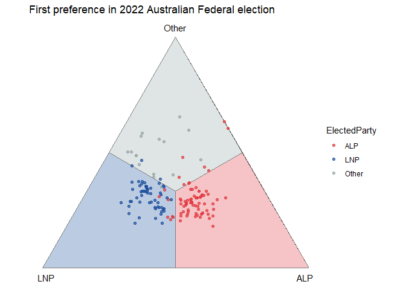
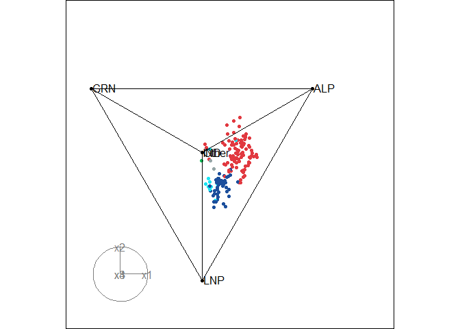
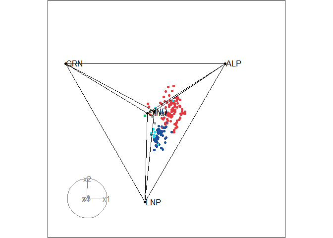

prefviz is a visualisation toolkit for preferential data, where individuals rank or order a set of alternatives, such as ranked-choice election ballots, tournament results, or survey rankings. The package makes it easy to explore both single-contest and multi-contest preference patterns through three complementary plot types:
- Distribution of preferences bar chart shows the marginal vote shares for each candidate in a single contest.
- Pairwise heatmap reveals head-to-head competition between every pair of candidates, including Condorcet winner/loser detection.
-
Ternary plot compares multiple sets of preferences simultaneously by placing each one as a point inside a simplex, where each vertex represents one items and a point’s position reflects how support is split among all items. Traditional ternary plots support three items via a 2D simplex - an equilateral triangle, but
prefvizextends this to high dimensions via animated tours when there are more than 3 items.
Installation
prefviz is available on CRAN:
install.packages("prefviz")The development version of prefviz can be installed via:
# install.packages("devtools")
remotes::install_github("numbats/prefviz")Getting started
Distribution of preferences bar chart
Used when you want to understand how preferences is spread across items in a single contest.
sushi_data <- prefio::read_preflib(
"00014 - sushi/00014-00000001.soc",
from_preflib = TRUE
)
irv_result <- dop_irv(sushi_data,
preferences_col = preferences,
frequency_col = frequency)
dop_bar(irv_result, items = -c(round, winner), at_round = 1)
Pairwise heatmap
Used when you want to examine head-to-head competition between every pair of candidates and identify Condorcet winners or losers.
pw <- pairwise_calculator(sushi_data,
preferences_col = preferences,
frequency_col = frequency)
pw
#> Pairwise analysis (10 items)
#>
#> Head-to-head results (first 5 rows):
#> item_a item_b wins_a wins_b total tcp_a tcp_b
#> ebi (shrimp) anago (sea eel) 2152 2848 5000 43.0% 57.0%
#> ebi (shrimp) maguro (tuna) 2848 2152 5000 57.0% 43.0%
#> ebi (shrimp) ika (squid) 2570 2430 5000 51.4% 48.6%
#> ebi (shrimp) uni (sea urchin) 2428 2572 5000 48.6% 51.4%
#> ebi (shrimp) sake (salmon roe) 3449 1551 5000 69.0% 31.0%
#> h2h_winner
#> anago (sea eel)
#> ebi (shrimp)
#> ebi (shrimp)
#> uni (sea urchin)
#> ebi (shrimp)
#>
#> Condorcet winner: tamago (egg)
#> Condorcet loser: tekka-maki (tuna roll)
pairwise_heatmap(pw, value = "tcp")
Ternary plot
Used when you want to compare preference distributions across many sets of preferences simultaneously. Each point is one set of preference (e.g. an electoral division, a customer survey, etc.), and its position inside the simplex reflects how support is split among the items.
# First-preference shares across 2025 Australian Federal Election divisions
tern22_df <- aecdop22_transformed |>
filter(CountNumber == 0)
head(tern22_df)
#> # A tibble: 6 × 6
#> DivisionNm CountNumber ElectedParty ALP LNP Other
#> <chr> <dbl> <chr> <dbl> <dbl> <dbl>
#> 1 Adelaide 0 ALP 0.400 0.32 0.280
#> 2 Aston 0 LNP 0.325 0.430 0.244
#> 3 Ballarat 0 ALP 0.447 0.271 0.282
#> 4 Banks 0 LNP 0.353 0.452 0.195
#> 5 Barker 0 LNP 0.209 0.556 0.235
#> 6 Barton 0 ALP 0.504 0.262 0.234
# Create ternable object
tern22 <- as_ternable(tern22_df, ALP:Other)
# Plot
ggplot(get_tern_data2d(tern22), aes(x = x1, y = x2)) +
add_ternary_base() +
geom_ternary_region(
vertex_labels = tern22$vertex_labels,
aes(fill = after_stat(vertex_labels)),
alpha = 0.3, color = "grey50", show.legend = FALSE
) +
geom_point(aes(color = ElectedParty), alpha = 0.7) +
add_vertex_labels(tern22$simplex_vertices) +
scale_fill_manual(
values = c("ALP" = "#E13940", "LNP" = "#1C4F9C","Other" = "#95A5A6"),
aesthetics = c("fill", "colour")
) +
labs(title = "First preference in 2022 Australian Federal election")
When there are more than 3 alternatives, use get_tern_datahd() and get_tern_edges() to prepare the data for an animated tour through the high-dimensional simplex via the tourr package.
# Load the data
aecdop25_transformed <- prefviz::aecdop25_transformed |>
filter(CountNumber == 0)
head(aecdop25_transformed)
#> # A tibble: 6 × 8
#> DivisionNm CountNumber ElectedParty ALP GRN LNP Other IND
#> <chr> <dbl> <chr> <dbl> <dbl> <dbl> <dbl> <dbl>
#> 1 Adelaide 0 ALP 0.465 0.190 0.242 0.104 0
#> 2 Aston 0 ALP 0.373 0 0.377 0.209 0.0414
#> 3 Ballarat 0 ALP 0.424 0 0.286 0.262 0.0281
#> 4 Banks 0 ALP 0.364 0.119 0.391 0.106 0.0202
#> 5 Barker 0 LNP 0.225 0.0816 0.5 0.135 0.0586
#> 6 Barton 0 ALP 0.471 0.159 0.242 0.128 0
# Create ternable object
tern25 <- as_ternable(aecdop25_transformed, ALP:IND)
# Plot
party_colors <- c(
"ALP" = "#E13940", # Red
"LNP" = "#1C4F9C", # Blue
"GRN" = "#10C25B", # Green
"IND" = "#1ce5f3", # Teal
"Other" = "#95A5A6" # Grey
)
tourr_data <- get_tern_datahd(tern25)
color_vector <- c(
rep("black", 5),
party_colors[aecdop25_transformed |> filter(CountNumber == 0) |> pull(ElectedParty)]
)
tourr::animate_xy(
dplyr::select(tourr_data, starts_with("x")),
edges = get_tern_edges(tern25),
obs_labels = tourr_data[["labels"]],
col = color_vector,
axes = "bottomleft"
)

Learn more
To learn more about the visualisations, especially ternary plots, see the package vignettes:
-
vignette("transform_raw_data", package = "prefviz")- introduction to common preferential data formats and how to usedop_transform()anddop_irv()to transform raw data to be ready for visualisation -
vignette("draw_ternary_plot", package = "prefviz")- step-by-step guide to building 2D and high-dimensional ternary plots withas_ternable(),get_tern_*(), andtourr. -
vignette("add_ordered_path", package = "prefviz")- how to add ordered paths to your ternary plots to trace how preference distributions evolve over time or across preference sets
References
Cook D., Laa, U. (2024) Interactively exploring high-dimensional data and models in R, https://dicook.github.io/mulgar_book/, accessed on 2025/12/20.